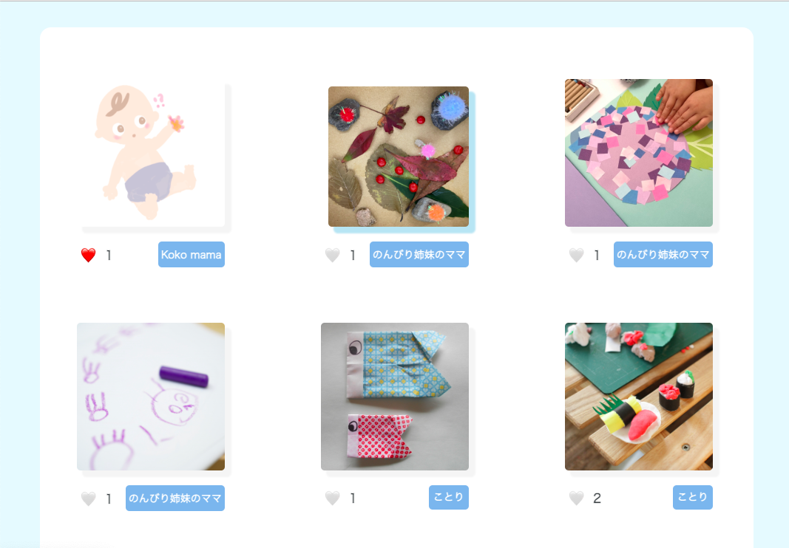
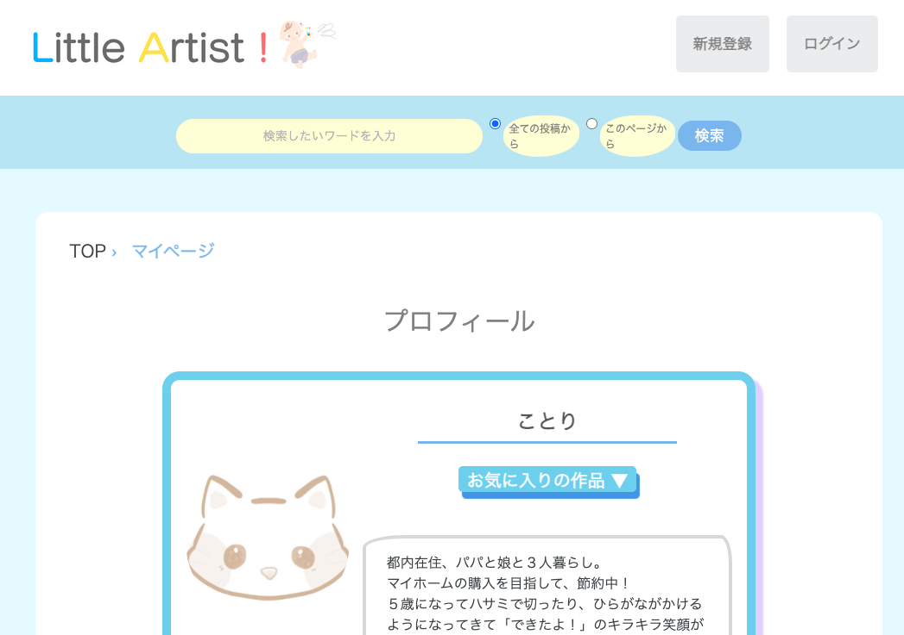

Little Artist
（子どもの作品管理・シェアアプリ）
開発環境
Ruby / Ruby on Rails / MySQL / GitHub / Heroku / Visual Studio Code
-
概要
制作時間 106時間(6/1時点) URL https://little-artist.herokuapp.com/ ID laappname PASS 08642 -
動作テスト
テスト用アカウント
mail test@co.jp PASS 123456a
OUTLINEアプリケーションの概要
オリジナルアプリケーションとして「子どもの作品」を写真でシェアし、web上に子どもの作品を保管できるアプリケーションを開発しました。
主な機能は、ユーザー登録機能、作品投稿機能、マイページ機能、お気に入り機能、検索機能です。
トップページにアクセスすると、子どもの作品の一覧が表示されています。それをクリックすると、その投稿の詳細を閲覧することができます。
ユーザー登録をすると、画像投稿やお気に入り機能を使うことできます。自身の投稿を一覧で見ることができ、子どもの成長の記録を保管することができます。
またログインすると、気になった作品にはコメントをすることができます。気になるユーザーとやり取りすることが可能です。
-
開発に至った経緯
保育の現場で保護者の方とお話をする中で「家庭でも発達に即した遊び（制作）をしたいけれど思いつかない」「５歳児だと５年分の作品になるので、保管場所に悩むことがある」とった課題を耳にする機会が多くありました。
課題を分析した結果、「発達に即した遊びが思いつかない」ことに関しては仕事や子育てで忙しく、時間が取れないことが要因ではないかと仮定し、時間がなくても欲しい情報にすぐアクセスできるアプリケーションを作成することが解決の１つになるのではないかと考えました。
「保管場所に悩む」ことに関しては成長の記録を「写真として」web上に保存することで管理しやすくなるのではないかと考えました。
そこで「子どもの作品」をメインとし、web上に子どもの作品を保管できるアプリケーションを開発することにしました。 -
開発で工夫したこと
1つ目はユーザーが直感的に使用しやすいビューのデザインです。子どもの作品をメインとしているため全体的に丸みを帯びた、柔らかいイメージを意識し、作成しました。またリンク先に遷移する場所は色を変えたり、動きを出すことで、ユーザーが直感的にアクションしやすいよう意識しました。
2つ目はレスポンシブ対応です。スマートフォンブラウザでの利用も考え、「スマホで見やすい」「スマホでタップしやすい」をテーマにマークアップを行い実装しました。
3つ目はマイページ機能です。自分の投稿のみから過去の作品を探す検索機能、お気に入りした投稿を保存する機能がついています。見たい情報にすぐにアクセスできるように工夫しています。
-
今後実装したいと思っていること
実際に友人や知人に使用してもらった中で出た意見から、以下の２点を追加していきたいと思っています。
1つ目は、お気に入り機能やコメント機能の非同期化です。リロードする時間を最小限にすることで、ユーザーが次のアクションに移行しやすいと考えています。
2つ目は、個別検索機能です。ユーザー名のみ、年齢のみ等、より詳細な個別検索にすることで必要な情報にアクセスしやすいと考えています。
ユーザーの利便性を向上させるため、ユーザーからの実際の声を反映できるような開発していきたいと思っています。